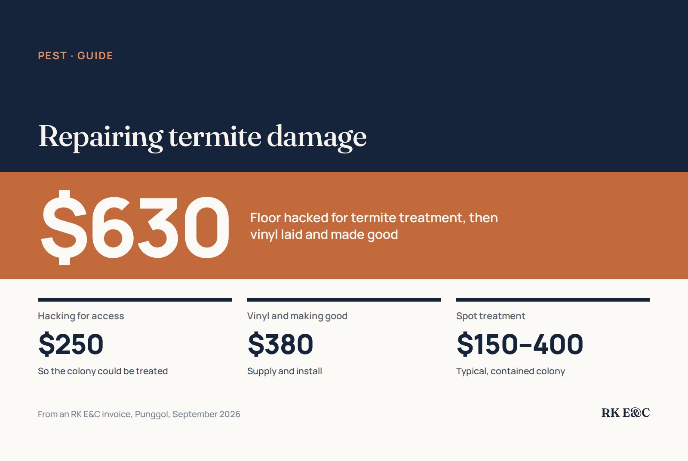

After termite treatment: repairing the floor, frames and skirting

Termites leave two problems: the colony, and the timber it has eaten. Treat the colony first, then repair. On a recent RK E&C job in Punggol, the floor had to be hacked open so the area could be treated ($250), and the hacked area was then finished with new vinyl flooring and made good ($380): $630 for the repair side of the job. Damaged skirting and door frames are replaced the same way, once the treatment has done its work.
Treat first, repair second
Repairing over a live colony wastes money: new timber is simply the next meal. The order is always the same:
- Inspection and treatment of the colony. See our termite treatment guide for the methods; spot treatment for a contained colony typically runs $150 to $400.
- Confirm the activity has stopped before closing anything up.
- Remove and replace what was damaged, and make good the finishes around it.
What termites usually damage
- Skirting, often the first place mud tubes appear.
- Door frames, which can look intact but sound hollow when tapped.
- Parquet and timber flooring, and what sits under other floor finishes.
- Built-in carpentry, especially the backs and bases of wardrobes and kitchen cabinets against walls.
Hollow timber cannot be filled and painted over; it has lost its strength. It is cut out and replaced.
Hacking for access
When the colony is under a floor finish, the treatment has to reach it. That can mean hacking part of the floor open, as in Punggol. The opened area is then made good with a new finish, which is a chance to choose something termites cannot eat.
Choosing what goes back
- Floors: vinyl, as used in Punggol, gives termites nothing to feed on and copes with humidity. See vinyl vs laminate; supply and lay is typically about $4 to $9 per sqft.
- Door frames and doors: a damaged frame is replaced, often with the door. A full bedroom door replacement is around $250 to $500 supplied and installed; see HDB door repair.
- Carpentry: damaged sections of built-ins are replaced; see built-in wardrobes.
What the repair costs
| Item | Price (SGD) | Source |
|---|---|---|
| Hacking of floor for pest control | $250 | RK E&C invoice, Punggol, September 2026 |
| Supply and install vinyl flooring, making good the hacked area | $380 | Same invoice |
| Spot treatment, contained colony | $150 – $400 | See termite treatment |
| Bedroom door replacement, supplied and installed | $250 – $500 | See door repair |
Keeping them away after the repair
- Fix leaks and damp. Subterranean termites need moisture; a leaking pipe behind a cabinet is an invitation.
- Keep timber off damp walls and floors where you can, and avoid storing cardboard against walls.
- Check again. Look along skirting and door frames for mud tubes every few months, and treat early if they come back.
Frequently asked questions
How much does it cost to repair termite damage in Singapore?
It depends on what was damaged. On a recent RK E&C job in Punggol, hacking the floor so it could be treated cost $250, and laying new vinyl flooring and making good the area cost $380, $630 in total. A bedroom door replacement is around $250 to $500, and spot treatment for a contained colony typically $150 to $400.
Should I repair termite damage before or after treatment?
After. Repairing over a live colony wastes money because new timber is the next meal. Treat first, confirm the activity has stopped, then replace what was damaged.
Can termite-damaged wood be repaired?
Hollow timber has lost its strength, so it is cut out and replaced rather than filled and painted over.
Why would the floor need to be hacked?
When the colony is under a floor finish, hacking part of the floor lets the treatment reach it. The area is then made good with a new finish.
What flooring is best after termite damage?
A finish termites cannot eat, such as vinyl, which also copes with Singapore's humidity. That is what was used on the Punggol repair.
Getting it done by RK E&C
RK E&C is a Singapore-registered renovation and handyman company (UEN 202442767D). We handle termite jobs from inspection and treatment through to replacing the floor, frames and skirting, so the repair does not need a second contractor. See our termite treatment service.
Send photos of the damage and any mud tubes through our contact form or WhatsApp.
Termite damage to repair?
Send photos of the damaged floor, frame or skirting. We will advise on treatment first, then quote the repair.
The $250 and $380 figures are from an actual RK E&C invoice in Punggol dated September 2026. The treatment, door and flooring ranges are from our termite treatment, door repair and vinyl flooring guides. None of this is a quotation.